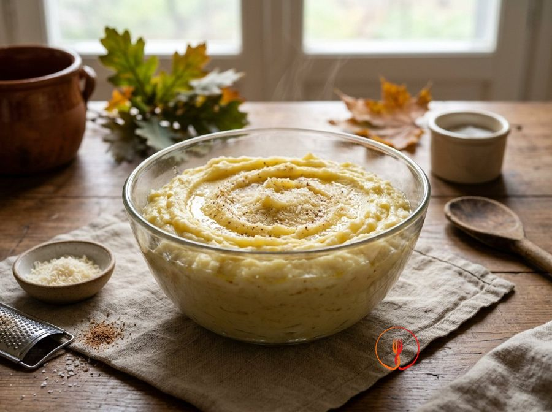

Mashed potatoes
Ingredients
- floury potatoes1 kg
- whole milk250 ml
- butter50 gr
- grated parmesan cheese (optional)40 gr
- Saltto taste
- Nutmegto taste
Allergens
Milk
Method
- Wash the potatoes and put them in a pot with lightly salted cold water.
- Bring to a boil and cook for about 25–30 minutes, checking the softness with a fork.
- Drain the potatoes, peel them while still hot and mash them with a potato masher.
- Heat the milk in a small saucepan without letting it boil.
- Transfer the mashed potatoes to a saucepan and add the butter in small pieces.
- Pour in the hot milk a little at a time, stirring with a whisk or wooden spoon until you achieve a creamy consistency.
- Add salt, nutmeg and parmesan, if desired, continuing to stir gently.
- Serve hot as a side dish or use the mashed potatoes for other preparations.
Chef's tips
Tips, errors and alternatives:
- Use floury potatoes, which are more suitable for mashing.
- Do not use a blender: it could make the mash sticky.
- If it is too thick, add more hot milk.
- You can replace part of the milk with fresh cream for a richer result.
- For a lactose-free version, use lactose-free milk and butter.
Nutrition facts (estimate)
| Per serving (315 g) | Per 100 g | |
|---|---|---|
| Energy | 1510 kJ / 361 kcal | 481 kJ / 115 kcal |
| Protein | 10 g | 3.3 g |
| Carbohydrates | 46 g | 14 g |
| of which sugars | 5.1 g | 1.6 g |
| Fat | 15 g | 4.8 g |
| of which saturates | 9.5 g | 3.0 g |
| Fibre | 5.0 g | 1.6 g |
| Salt | 1.2 g | 0.4 g |
AI estimates based on average CREA / USDA data: indicative only, not a substitute for medical or dietitian advice.
Open the recipe in the app for the shopping list, ingredient sheets and nearby shops.